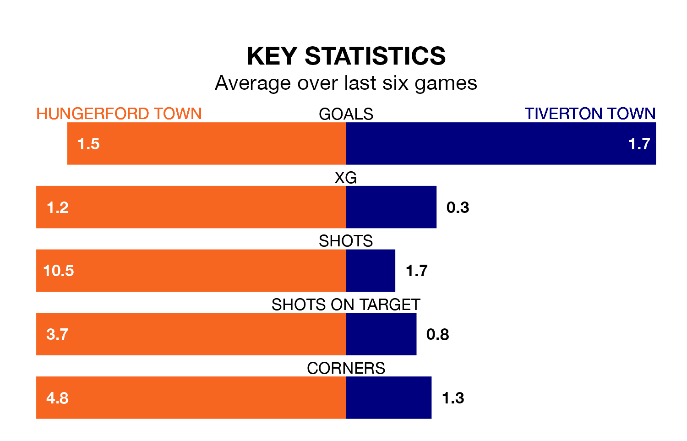

Tiverton Town travel to Bulpit Lane looking to secure a first win in six Southern League Premier – South games against Hungerford Town on Saturday.
Tiverton have lost four and drawn one matches since they last earned three points – against Poole Town on January 27.
They face a Hungerford side who have won just one and drawn one over that time.
With 62 goals in 33 games so far this season, Hungerford are the league's joint-third-highest scorers with 1.9 goals per game. But they are conceding more than average too, letting in 61 goals at a rate of 1.8 per game.
Tiverton, meanwhile, are below average scorers, with 1.5 goals per game, compared to a league average of 1.7. They have conceded 2.0 goals per game.
Tiverton Town are 20th in the table after 31 games, of which they have won six and drawn 10, earning 28 points.
Hungerford Town are 12 places ahead of the visitors in eighth, with 13 wins and 10 draws putting them on 49 points.
Hungerford's last match was on February 24, a 2-1 win against Sholing.
Tiverton lost 2-1 against AFC Totton last time out, on March 9.
Updated: 15:10 (UTC), 15/03/24